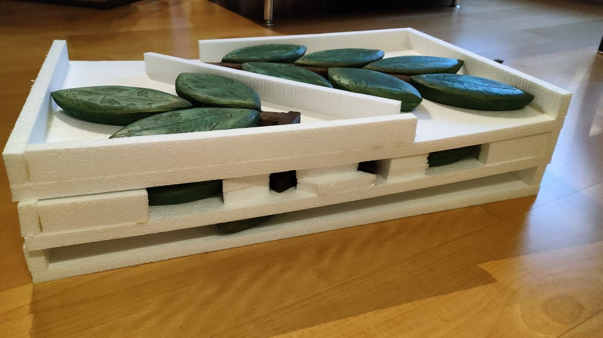
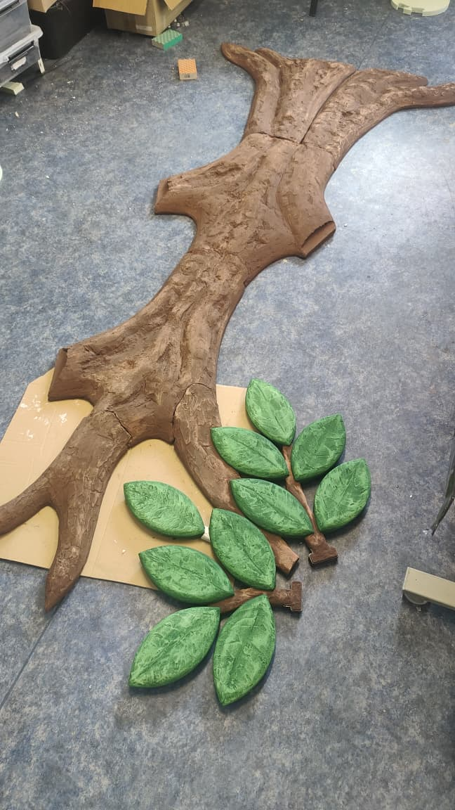
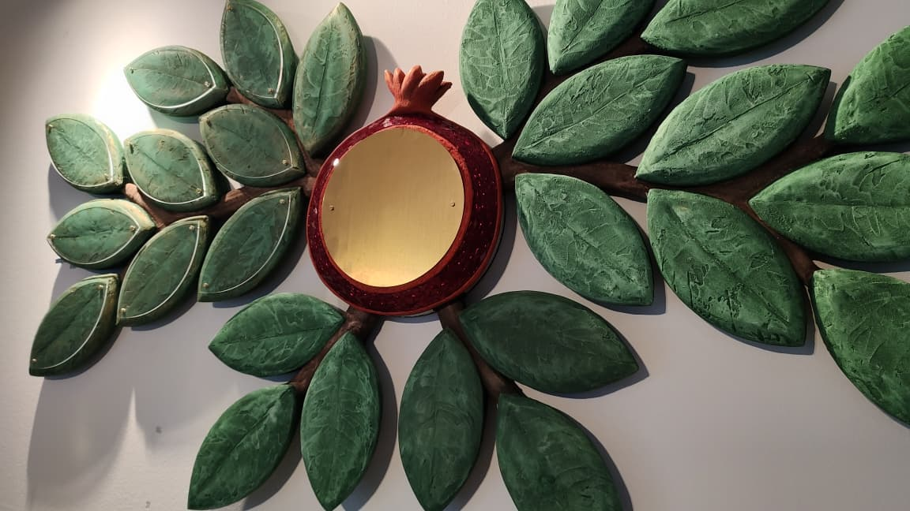
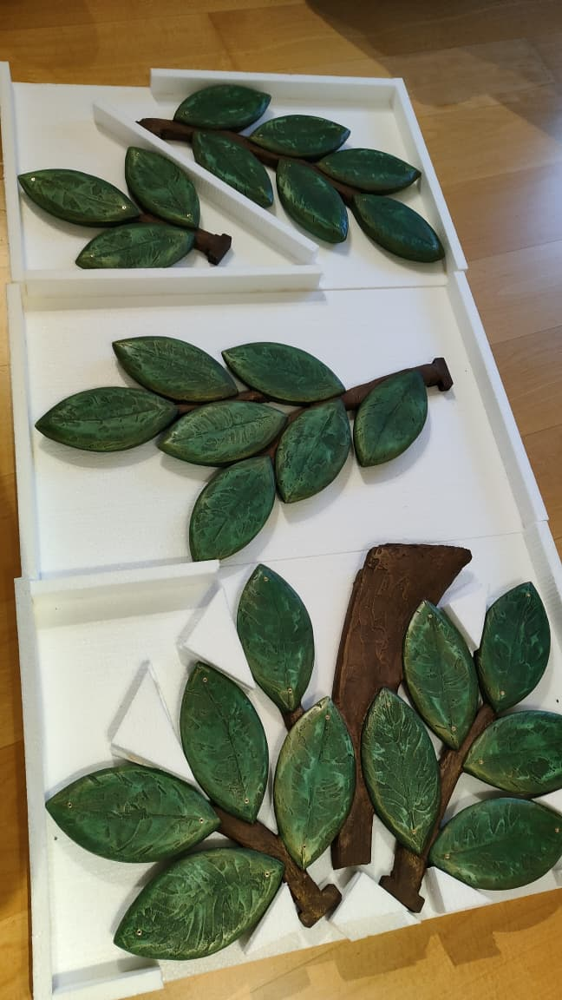
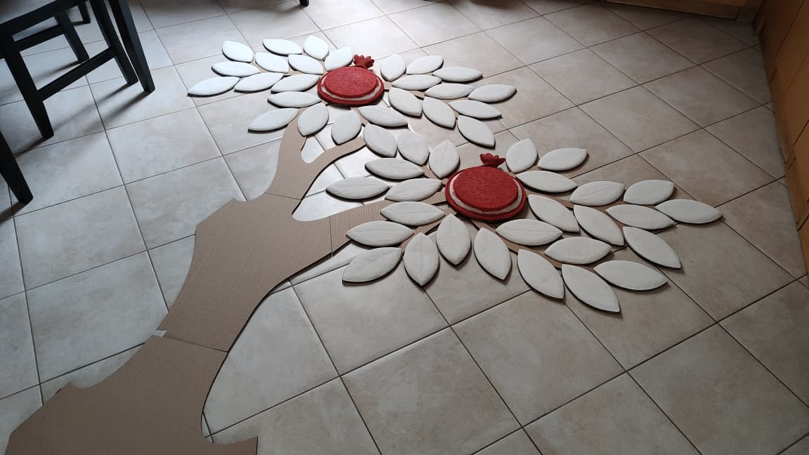
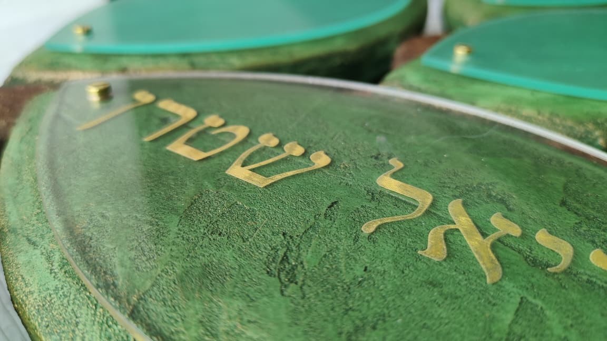
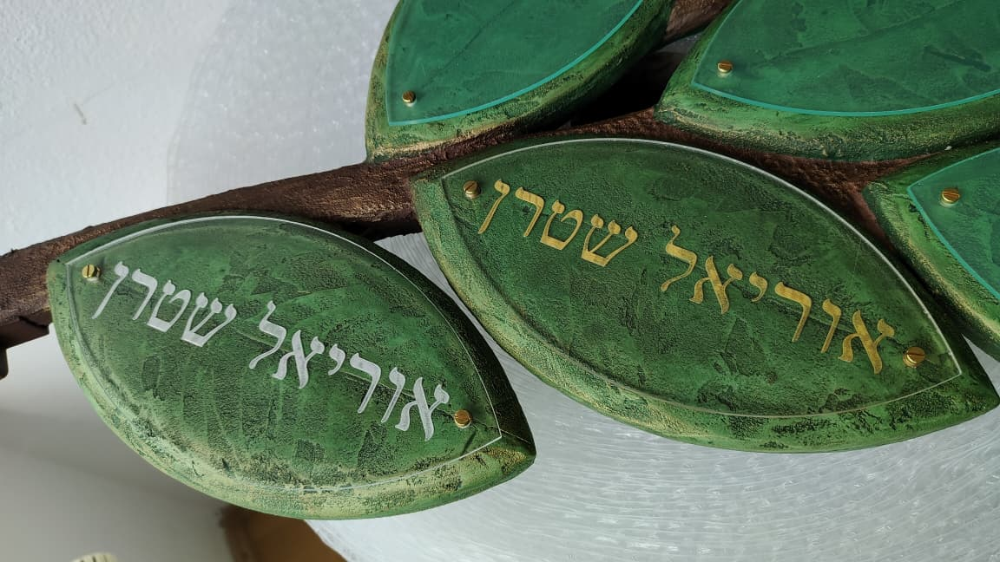
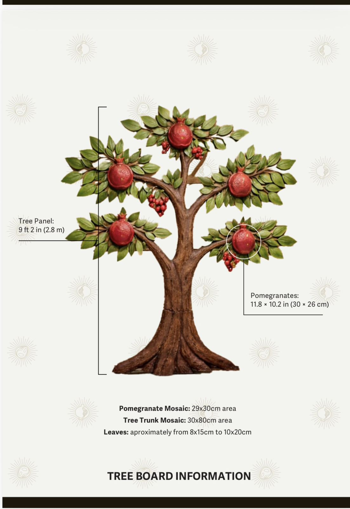

A permanent, expandable donor recognition installation — custom designed for your space, handcrafted in fresco and amber, built to grow with your community for decades.

A Tree of Life donor wall is a large-scale, wall-mounted installation in which individual donor names are displayed on leaves, branches, and other botanical elements of a sculpted tree. It serves two purposes simultaneously: it functions as a fundraising mechanism — each named element is sponsored by a donor — and as a permanent architectural feature of the synagogue interior.
The tree itself is not a printed graphic or a vinyl decal. It is built from physical materials applied directly to a backing panel: sculpted relief work, fresco, amber inlays, and mosaic glass. Each donor leaf is a sculptural, hand-painted leaf form, with a transparent engraved nameplate mounted on its surface. Nameplates are individually fabricated and replaceable as new donors are added over time.
The result is something between a mural and a memorial — a piece that changes slowly over years as the community grows.
Traditional donor recognition boards — rows of engraved names on a flat surface — do the job, but they don't invite people to stop and look. A Tree of Life is different in one specific way: it has a structure that people can read. Visitors naturally scan from the roots upward, find familiar names, notice the branches filling in. The tree becomes a kind of document of the community's history.
This matters for fundraising. When a potential donor stands in front of the installation and sees their neighbor's leaf already in place, the decision to give becomes less abstract. The social proof is built into the object itself.
Every Tree of Life we produce is sized and designed for the specific wall where it will live. We start with measurements — ceiling height, wall width, any architectural interruptions like windows or doorways — and work from there. The tree is not scaled up or down from a template. The proportions of trunk, branch spread, canopy, and root system are drawn to fit the actual space.
This means the installation doesn't look like something that was ordered from a catalog and hung on the wall. It looks like it belongs there — because it was designed to be there.
The fresco background is applied in layers, matched to the color palette of the room. The bas-relief elements — trunk texture, branch structure, decorative pomegranates — are built up in depth so the tree has shadow and dimension under the room's natural light. Amber pieces are set into specific points of the composition to catch light differently depending on the time of day.
None of this happens automatically. Each element is a decision made for that particular room, that particular congregation, that particular building.

Most synagogue fundraising relies on the same basic exchange: a donor gives money, their name goes on a list or a plaque, the list gets mounted somewhere in the building. It works. But it asks donors to imagine the recognition rather than see it — and the recognition itself rarely becomes something the community returns to.
A Tree of Life changes the structure of that exchange in a few specific ways.
When a donor sponsors a leaf, they're not purchasing advertising space on a wall. They're adding something to a growing composition that the whole congregation sees and interacts with. The framing matters: "your name on a plaque" and "your leaf on the tree" describe the same transaction differently, and the second description produces a different response.
Synagogues that have run Tree of Life campaigns consistently report stronger donor participation than traditional board campaigns — not because the amounts are lower, but because the object people are contributing to feels worth contributing to.
The Tree of Life — Etz Chaim — doesn't need to be explained to a Jewish audience. It carries its own weight of meaning: continuity, Torah, the connection between generations. A donor wall built around this symbol draws on that existing resonance without having to manufacture it.
This is an advantage that most donor recognition formats don't have. A row of plaques is just a row of plaques. A tree is already something.
A Tree of Life campaign doesn't close when the initial fundraising is done. Because leaves can be added for years after installation, the tree remains an active fundraising tool for as long as the synagogue chooses to run it. Members who joined after the original campaign can still participate. Annual donors can be recognized with recurring leaf additions. Memorial dedications can be incorporated as the congregation grows.
The installation pays for itself over time — not just through the original campaign, but through every subsequent round of giving it enables.
The sponsorship structure of a Tree of Life donor wall is based on a simple hierarchy: different elements of the tree correspond to different giving levels. The most common configuration uses two primary tiers.
The pomegranate is a natural anchor point within the tree's composition. It's larger than a leaf, more prominent, and traditionally significant in Jewish symbolism. In a donor recognition context, pomegranates are reserved for major gifts.
Recommended sponsorship level: $10,000
Standard configurations range from 3 to 8 pomegranate positions, paired at a fixed ratio of 25 leaves per pomegranate. Larger custom installations are available by request. Each pomegranate carries an engraved dedication — donor name, family name, or a short memorial inscription — set directly into the sculptural element.

Leaves are the primary unit of the tree. Each is a dimensional, hand-painted sculptural leaf, with a transparent engraved nameplate set into its surface carrying a single name or family dedication.
Recommended sponsorship level: $600–$1,000
Within this range, $770 remains a popular specific choice — the number is not arbitrary, carrying particular meaning within Chabad communities, and resonating broadly across the Jewish world.
At the standard ratio, that means installations typically range from 75 to 200 leaf positions. Larger custom installations can accommodate more.
The sponsorship amounts listed above are recommendations, not requirements. Every synagogue has its own donor base, its own fundraising culture, and its own campaign goals. Some communities set leaf sponsorships at $500 or $1,000. Some add a third tier — a branch level, for example, at $5,000 — that sits between the pomegranate and the leaf.
We don't prescribe the structure. We build the installation to match whatever tiered system your committee designs. If your synagogue has already run donor campaigns and knows what levels your community responds to, we work from that. If you're designing the campaign from scratch, we can share what has worked in comparable communities.
Pomegranate and leaf positions scale together at a fixed ratio: every pomegranate added to the composition is paired with 25 leaf positions. The table below shows the standard configurations and the fundraising ceiling each one represents at the recommended sponsorship levels.
| Pomegranates | Leaves | Pomegranate Total ($10,000 ea.) | Leaf Total ($800 ea.) | Campaign Total |
|---|---|---|---|---|
| 3 | 75 | $30,000 | $60,000 | $90,000 |
| 5 | 125 | $50,000 | $100,000 | $150,000 |
| 6 | 150 | $60,000 | $120,000 | $180,000 |
| 8* | 200 | $64,000 | $160,000 | $224,000 |
*At 8 pomegranates, each is produced at a smaller size, priced at $8,000 rather than $10,000.
Tree of Life campaigns are often structured so that the donor recognition opportunities themselves help fund the project. In an active congregation, a substantial number of leaves and major-donor elements may be sponsored during the initial campaign, and some communities are able to fill most of the available recognition opportunities within the first year. Any positions that remain open are part of the original composition and available for future campaigns.
A traditional donor board has a fixed capacity. Once it's full, the campaign is over and the board becomes a historical document — accurate, but static. New members who join the congregation after the campaign have no way to participate. The board stops doing work the moment the last plaque is engraved.
A Tree of Life is designed to avoid this. Because leaves can be added for years after the initial installation, the tree remains an active part of the congregation's fundraising infrastructure. A family that joins five years after the original campaign can still have a leaf. A major donor who upgrades their giving level can have a pomegranate added to an existing installation. Memorial dedications can be incorporated as members are lost and remembered.
This extended lifecycle changes the economics of the installation. The cost of production is a one-time capital expense. The fundraising potential is ongoing.
Printed donor lists — in bulletins, on websites, in annual reports — are accurate and inexpensive. They are also easy to ignore. A name in a column of names is indistinguishable from every other name in that column.
A leaf on a tree is a specific object in a specific place. It has neighbors. It has a position in the composition. When a donor's family comes to services, they know which leaf is theirs. Children grow up knowing it. Grandchildren are shown it. The more personally meaningful a donor's recognition is, the more likely they are to give again, to encourage others to give, and to feel genuine ownership over the community's space.
We don't publish fixed prices for Tree of Life installations, because no two projects are the same. The cost depends on a combination of factors, each of which can be adjusted based on your synagogue's goals and budget.
The single largest cost variable is overall size. A compact installation designed for a hallway or entrance — approximately 4 × 5 feet — requires significantly less material and production time than a multi-panel installation spanning a sanctuary wall.
Each leaf position requires a sculptural leaf element, an engraved nameplate, and mounting hardware. Pomegranates require sculptural fabrication and are more labor-intensive per unit. The total count of each element directly affects production cost — and also determines your campaign's fundraising ceiling.
The base material for the tree structure — fresco, painted relief, or mosaic-dominant composition — affects both cost and visual character. Amber inlays are priced by piece and by placement complexity. Mosaic glass coverage is priced by area.
Each donor dedication is individually engraved. Standard engraving includes name and optional date or short inscription. Hebrew text, custom fonts, or decorative borders are accommodated at additional cost. Shipping cost depends on destination and total panel weight. Installation arrangements are determined during project planning and quoted separately when applicable.
The background of the Tree of Life is finished in fresco, color-matched to the room's existing palette.
The trunk, branches, leaves, and pomegranates are built up in bas-relief, giving the tree dimension and shadow that shifts with the light in the room.
Amber pieces are sourced from Ukraine and selected for color, clarity, and size. Because no two pieces of amber are identical, the placement of each piece is a design decision made during fabrication, not a mechanical process.
Select details, including the pomegranates, incorporate Italian smalti glass mosaic for added color and texture.
Each leaf is a dimensional, hand-painted sculptural element — part of the tree's artistic composition, not a flat plaque. A transparent, individually engraved nameplate is mounted on the surface of each leaf, carrying the donor's dedication. Nameplates can be removed and replaced individually, allowing existing dedications to be updated without disturbing the surrounding installation.
Every Tree of Life begins as raw material long before it goes on a wall. Leaves are first sculpted and cast, then hand-painted in layered greens to match the finish of every other piece in the composition. Pomegranates are built up and painted the same way, checked against material samples for color consistency across the whole installation.




The following dimensions represent typical configurations. Every installation is sized to the specific wall and donor count of your project.

| Element | Typical Range |
|---|---|
| Overall height | 4 ft — 10 ft |
| Panel thickness | 2.5 — 4 inches |
| Nameplate size | 3 × 4 inches — 4 × 6 inches |
| Pomegranate size | 6 × 8 inches — 10 × 14 inches |
| Leaf capacity | 75 — 200 positions (standard); more by custom request |
| Pomegranate capacity | 3 — 8 positions (standard); more by custom request |
The branch structure of the tree is designed with a defined number of leaf positions — including positions that are intentionally left empty at the time of installation. These open positions are part of the original composition, not gaps that need to be filled. They give the tree room to grow visually without looking incomplete.
When a new donor is ready to be recognized, a new engraved plaque is fabricated to match the original specification and mounted in an available position. No part of the existing installation needs to be modified.
When a new leaf or pomegranate is added after the original installation, the materials are matched as closely as possible to the existing finish, rather than to a new production standard.
Tree of Life installations are built and shipped in modular panels. Panel size is determined during the design phase based on wall dimensions and shipping constraints. Panels are joined on-site using concealed connecting hardware. The modular system also allows future expansion panels to be added to an existing installation without requiring removal of completed sections.
The Tree of Life is a modular installation, and assembly documentation is provided. Wall preparation requirements are discussed individually for each project based on your space and construction.
This completed Tree of Life project was developed and produced over approximately five months, from project start to completed artwork. Production schedules for future projects depend on the design, dimensions and scope of the commission.
What exactly is a Tree of Life donor wall?
It's a wall-mounted installation in which donor names are displayed on individual engraved leaves and pomegranates set into a handcrafted sculptural tree. The tree is built from physical materials — fresco, bas-relief, amber, mosaic glass — and is permanently installed in the synagogue. Each named element is sponsored by a donor, making the installation both a work of art and a fundraising mechanism.
How is this different from a standard donor plaque board?
A standard plaque board displays names on a flat surface. A Tree of Life is a three-dimensional composition with depth, texture, and visual structure. Visitors engage with it differently — they scan the branches, find familiar names, notice the tree growing over time. That engagement has practical fundraising implications: it creates social proof, encourages conversation, and motivates future donors in ways that a flat board does not.
Is the Tree of Life a Jewish symbol?
Yes. Etz Chaim — the Tree of Life — appears in the Torah as a symbol of wisdom, and the Torah scrolls themselves are mounted on wooden rollers called atzei chaim, Trees of Life. The symbol carries meaning across the Jewish world and is immediately legible to Jewish audiences without explanation.
Is a Tree of Life donor wall appropriate for synagogues generally?
Yes. The design is adapted to the aesthetic and symbolic language of your synagogue and community.
Can the tree include Hebrew text?
Yes. Hebrew inscriptions — community name, Torah verse, founding date, or dedicatory text — are incorporated into the canopy, trunk, or border of the composition in relief or engraved metalwork.
How does the fundraising campaign work?
The synagogue defines the number of leaf and pomegranate positions, sets sponsorship amounts for each tier, and runs a named giving campaign. Donors select a position and make a gift at the corresponding level. The campaign can run before, during, or after production — most synagogues begin soliciting before the installation is complete, using renderings and samples to show donors what they're sponsoring.
What sponsorship amounts do most synagogues use?
The most common structure uses $10,000 for a pomegranate and $600–$1,000 for a leaf. Some communities set leaf sponsorships as low as $500 or as high as $1,800 — the right amount depends on your donor base and campaign goals.
Can we add intermediate giving levels?
Yes. A three-tier structure — pomegranate, branch, and leaf — is common in larger campaigns. Branch-level sponsorships typically fall between $3,000 and $7,500.
What if we don't fill all the leaf positions in the first campaign?
That's normal and planned for. Open leaf positions are part of the original composition — they look like branches that haven't yet been filled, ready for future donors as your community grows.
Can the campaign run before the installation is complete?
Yes, and it often should. We provide high-resolution renderings and physical material samples that committees can use during donor presentations.
Can annual donors be recognized on the Tree of Life?
Some synagogues designate a section of the tree for annual giving recognition — a cluster of leaves updated on a rotating basis, with donors recognized for a defined period before the position becomes available for a new donor.
Can we see examples before committing?
Yes. We can share photography and details from our completed Tree of Life project at the initial consultation.
How custom is the design?
Completely. We don't work from a template. The proportions, materials, color palette, Hebrew text, number of leaves, number of pomegranates, and overall composition are all determined for your specific space.
What information do you need to begin?
Wall dimensions, photos of the space, the aesthetic character of the room, the approximate number of donor positions needed, and your timeline. Everything else is developed through the design process.
Do you provide a rendering before production begins?
Yes. Before production begins, we produce detailed digital renderings showing the installation in the context of your space. No fabrication begins until the design is approved in writing.
Can the design include a specific tree species?
Yes. Some congregations request an olive tree, a fig tree, or a pomegranate tree as the base form. The botanical character of the composition can be specified during the design phase.
How long does production take?
This completed Tree of Life project was developed and produced over approximately five months, from project start to completed artwork. Production schedules for future projects depend on the design, dimensions and scope of the commission.
What information can be engraved on a leaf?
A standard leaf engraving includes a name and an optional short dedication. Leaves accommodate one to three lines of text depending on size. Hebrew text can be included on request.
Can a leaf include a date or a short Hebrew phrase?
Yes. Common additions include a Hebrew name, a yahrzeit date, or a brief phrase such as z"l (of blessed memory).
What happens if a donor wants to update their dedication?
The engraved nameplate can be replaced without disturbing the surrounding installation or the sculptural leaf itself. We fabricate a new nameplate to the original specification and mount it in the existing position.
Can one leaf honor multiple people?
Leaf size limits the amount of text that can be legibly engraved. A single leaf typically accommodates one name or one family name. For multiple honorees, some congregations sponsor adjacent leaves.
How is the installation shipped?
The installation is built in modular panels and shipped by freight. Each panel is crated individually and packed with protective materials. Assembly hardware and installation documentation are included.
Who installs the Tree of Life?
Installation can be handled either by Shtern Amber Collection or by a qualified local contractor. For local installation, we provide the assembly documentation and project-specific installation guidance required for the completed Tree of Life.
Does the wall need any special preparation?
Wall preparation needs are assessed individually for each project as part of the design process.
How is the installation maintained over time?
The fresco surface can be gently wiped with a dry or slightly damp cloth. Engraved nameplates can be cleaned with a non-abrasive cloth.
What if a panel is damaged years after installation?
Because the construction is modular, a damaged section can potentially be replaced without affecting the rest of the installation. Contact us to discuss options for your specific project.
Can the installation be moved if the synagogue relocates?
Yes. The modular panel system allows the installation to be dismounted, crated, and reinstalled in a new location.
Is there a minimum project size?
We work with congregations of all sizes. A small installation with 75 leaf positions is as much a custom commission as a large sanctuary installation.
What does the initial consultation involve?
A conversation — typically 30 to 45 minutes by video call — in which we discuss your space, timeline, fundraising goals, and design preferences. There is no cost and no commitment.
Related Work